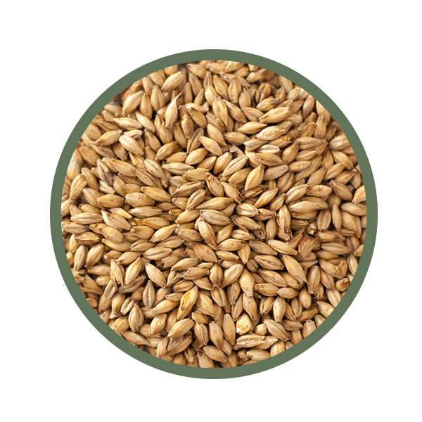

Porter Chorzowski

Opis
Piwo wykonane według tej receptury zajęło w swojej kategorii III miejsce w VI KPD w Żywcu.
Surowce
Słody
- słód pale ale 5,0kg
- Słód monachijski I 1,5kg
- Słód monachijski II 1,0kg
- Słód Caramunich II 1,0kg
- Słód Caraaroma 0,7kg
- słód Carafa III 0,2kg
- Płatki jęczmienne 0,8kg
Chmiele
- Chmiel Marynka szyszki - 60g
- Chmiel Lomik szyszki - 40g
Drożdże
- Drożdże_Wyeast_2308_Munich_Lager
Zacieranie
- 22l wody do zacierania
- 50°C - wsyp
- 55°C - 5 minut
- 62-63°C - 30 minut
- 72-73°C -50 minut
- 76°C - carafa III - 10 minut
Chmielenie
- 60g Marynki na 60 minut
- 40g Lomika na 20 minut